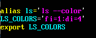
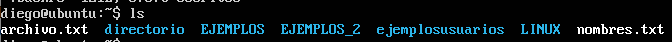
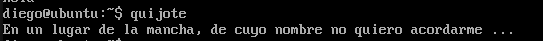
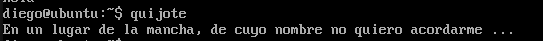

profile y bashrc
Son dos archivos de configuración relacionados con la administración de los usuarios. El archivo profile se ejecuta cuando qualquier usuario inicia la sesión y bashrc cuando cualquier usuario ejecuta el programa bash. Todos los usuarios contienen en su home una replica oculta de estos archivos para su personalización. Estos archivos se encuentran en el home de cada usuario.
Podemos usar estos archivos para personalizar los perfiles de los usuarios, por ejemplo podemos cambiar los colores del comando ls:  Una vez puesto el codigo en .bashrc, no se aplica hasta que reiniciemos la terminal. ( no hace falta apagar la maquina teclea "exit" y vuelve a logearte con el mismo usuario) Con el codigo anterior le estamos diciendo que cree un alias de tal forma que siempre que pongamos ls, el sistema lo traduce a ls --color. A su vez ls --color que hace es coger la variable LS_COLORS que se define después y que establece los colores para directorios ( di ) y ficheros ( fi ). Debido al codigo anterior obtendremos el siguiente resultado al hacer ls:  Como ves los ficheros van en blanco y los directorios en azulito. Prueba diferentes numeros hasta encontrar la combinacion de colores que te guste.
En .profile puedes crear un mensaje de bienvenida, puedes escribir el siguiente codigo al final del archivo:
Alias
Los alias nos permiten crear alias para cualquier combinación de comandos. El siguiente es un ejemplo inutil:
 Que daria como resultado:

Que daria como resultado:

Vim
Podemos tambien personalizar Vim también, pero en este caso con el archivo .vimrc, que debemos crear. Por ejemplo,
el comando colorschema nos permite cambiar los colores que usa vim y podemos poner lo siguiente en .vimrc
para conseguir el mismo resultado: